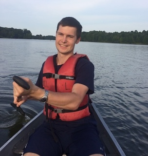

Open Resume
Grigoriy Dubrovskiy
Robotics, Software & Control Systems Engineer, M.Sc.
Philadelphia, PA, USA



About Me
Robotics, Software & Control Systems Engineer with 5+ years of applied experience in mobile robotics, autonomous driving, machine learning and motion planning in industrial and academic settings.
Certifications
- DDS Training from RTI (Data Model, Architecture, QoS, Configuring Transports, Keys, Instances, etc)March 2022
- QNX Training (Architecture, Process & Thread Synchronization, IPC, Boot Image generation, profiling, etc) March 2020
- Classic AUTOSAR Training (OS, SW Components, I/O, Comm, State Management, Sys. Services, NV Mem, Diag.) July 2020
- AUTOSAR Safe Training (Functional Safety, Memory Protection, Program Flow Control, Safe E2E, SafeRTE) November 2020
- AUTOSAR CyberSecurity Training (Basics of Cryptography, AutoSAR Crypto Stack, Secure OnBoard Comms, HSM) December 2020
- MICROSAR Ethernet Training (Basics of Ethernet and TCP/IP, Ethernet in AUTOSAR, SOME/IP, etc) May 2021
- AWS Certification "Running Container-Enabled Microservices on AWS" May 2019
- FAA licensed Drone Pilot, Part 107 Jan 2017
{kind=link}
Experience
Motional (formerly Aptiv, until March 2020) Boston, MA -> Philadelphia, PA
Senior Software Engineer - Motion Planning Team August 2022 – present
- Trajectory scoring and Behavior selection
Senior Software Engineer - Embedded SW Team April 2021 – August 2022
- Implemented sensor readers in C++14 for POSIX systems, reading data over Ethernet, CAN (radar, camera)
- Worked with ECUs (Aurix TC397, TC399): programming in C99, flashing, debugging
- In-house Classic AutoSAR semi-expert (design, quote and implement the original prototype with MICROSAR)
- Software/implementation point of contact for Functional Safety (ASIL) and CyberSecurity compliance
Software Engineer III October 2019 – March 2021
- Implemented Safety Subsystem components, based on RTOS
- Software packaging with Conan (simplifying inter-dependencies between sub-projects, debugging packaging, CI, build process)
- Implemented sensor readers over UDP, CAN, proprietary communication protocols (e.g. radar reader)
- Release and Development workflow re-design implementation (a side project with the Software Architecture Group)
AptivPittsburgh, PA
Software Engineer III August 2019 – October 2019
- Implemented visualization tools in Qt/QML for data recorded on Autonomous Vehicles
Autonomous Driving Systems Engineer – Test & Verification January 2018 – July 2019
- Significantly improved Software delivery and Conan packaging processes (for several C++ projects), as a side project
- Improved Continuous Development process, by root-causing regressions and software failures in corner cases
- Implemented algorithms in C++/Python/Bash for transmitting and saving data on Autonomous Vehicles in different formats
- Performed various data processing in C++/Python/Bash
- Developed scripts in Python & Bash for connecting to autonomous vehicles and storage units for transmitting and processing data
- Participated in code peer-reviewing in a large team, legacy code maintenance, interviewing and training new engineers
- Root-caused regressions in autonomy algorithms
University of Notre DameNotre Dame, IN
Graduate Research Assistant July 2015 - January 2018
- Developed algorithms in C/C++ in Linux environment for drones (Autoquad AQ6, Autoquad M4) for flying missions (video with 2 Autoquad M4) and Pioneer Robots (video of a Pioneer Robot with an implemented autonomous navigation system with formally proven collision avoidance in unknown and dynamic environments "SafeGuardPF").
- Developed and implemented an algorithm in C++ for optimized integrated task and motion planning in a “Warehouse scenario”. The global mission is given in the form of a k-bounded LTL specification. Video with implemented Integrated Task and Motion Planning (non-optimized).
- Implemented primitive actions (e.g. “Pick Up an object”) in C++ for a ground robot, using a web camera for color recognition.
- Implemented APIs for a 7 DoF manipulator (Cyton Gamma 1500) and implemented few demos (e.g. “picking up an object”).
- Prototyped algorithms with Sampling-based Motion Planning approaches (e.g. RRT), using Open Motion Planning Library.
- Served as a Drone Expert for the "Drone Sounder" project. Drone Sounder project was devoted to making measurements at different altitudes, using a drone with attached equipment. Responsibilities included: making decisions on planning, logistics, equipment procurement, flight safety, maintenance, modifications of the drone and being a drone pilot.
- Initiated purchase orders of equipment/components (~$4000+) and modified a DJI S900 drone for a "Drone Sounder" project.
- Performed drone flights for multi-million grant application towards building a city-scale Advanced Wireless Testbed. A video with DJI S900 and attached Software-Defined Radio. Mass Media coverage by WSBT, WNDU, ABC57 and South Bend Tribune.
- Served as a Drone Expert for Belle Bats Research Team in a project, which had a purpose to record acoustic signals of bats, avoiding each other. Responsibilities included: making design and safety recommendations/decisions, being the main Drone Pilot. Video of a drone with equipment, flying in the night in the middle of a desert. Acknowledgements in their paper in Scientific Reports.
- Taught Laboratory sessions for senior undergraduate students EE40472 (Electrical and Hybrid Vehicles).
Infineon Technologies Austria AGVillach, Austria
Engineer (Intern at Power Management Systems Department) January 2015 – July 2015
- Designed Control Systems for Low Voltage Power Converters. Recommendation.
Education
University of Notre DameNotre Dame, IN
Master of Science in Electrical Engineering January 2018
Department of Electrical Engineering
- Research Area: Autonomous Task and Motion Planning for Mobile Robots.
Saint Petersburg Electrotechnical University (SPb ETU)Saint Petersburg, Russia
Master of Science (Automation and Control of Industrial Complexes and Mobile Objects) 2013 - 2015
Faculty of Industrial Automation and Electrical Engineering
- Thesis: Control System for Low Voltage Power Converter (simulations performed in Cadence Virtuoso, VerilogA and Matlab)
Saint Petersburg Electrotechnical University (SPb ETU)Saint Petersburg, Russia
Bachelor of Science in Engineering and Technology (Automation and Control) 2009 - 2013
Faculty of Industrial Automation and Electrical Engineering
- Thesis: Control Systems Direct Drive. Manuscript for EPE'14-ECCE Europe, final version for EPE'14-ECCE Europe, poster for EPE'14-ECCE Europe.
Honors & Awards
- Graduated top of class (top 1%, Master degree), awarded Best Graduate of the University, (SPb ETU), 2015.
- Presidential Scholarship recipient (Russia's most prestigious academic award at Master level), (SPb ETU), 2014.
- Graduated top of class (top 1%, Bachelor degree), awarded Best Graduate of the University, (SPb ETU), 2013.
- Scientific Council Scholarship recipient (University's most prestigious academic award), (SPb ETU), 2011, 2012, 2013, 2014.
Leadership & Service
- Book proposal reviewer for Springer Nature since 2019.
- Reviewer for ACC (American Control Conference) since 2017.
- Member of IEEE (Institute of Electrical and Electronics Engineers) since 2012.
- Saint Petersburg Electrotechnical University IEEE Student Branch, Graduate Student Member, elected Chair (in 2014).
- Region 8 Student and Young Professionals Congress, (Krakow, Poland), Student Branch Chair / 2014 year participant.
Skills
Language Skills: Russian (Native), Kazakh (Beginner); Polish (Beginner), German (Beginner)
Devepment Skills:
- C++14/C++20 (~6 years)
- C (~7 years)
- Linux/Ubuntu (~8 years)
- CMake (~3 years)
- Software Packaging (~1 years)
- Conan (~1 years)
- Python (~2.5 years)
- Bash (~5 years)
- Docker (~6 year)
- Jenkins (~1.5 year)
- AppImage (~1 year)
- Git (~5 years)
- JIRA (~1.5 year)
- ROS/C++ (~2.5 years)
- MATLAB/Simulink (~6 years)
- CPLEX/C++ (~1 year)
- Z3/C++ (~0.5 year)
- Qt (~1 year)
- OMPL
- OpenCV
- MoveIt!
Additional Skills:
- Network Debugging
- CAN
- Ethernet
- SQL
- JSON
- PLC (~2 years)
- Data Management
- CAD Modeling (~2 years)
- 3D printing
- Weka
- VerilogA
- Cadence Virtuoso (0.5 year)
- PSpice (1 year)
- Altium Designer
- Latex (2.5 years)
- Mavlink
- HTML
{kind=link}
Laboratory Skills:
- Drone Pilot (20+ flight hours)
- Equipment Procurement
- Soldering
- PCB design
- LiPo batteries
- Lidars
- Lab Safety
{kind=link}
{kind=link}